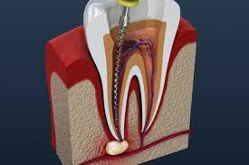
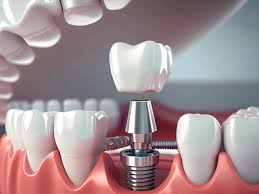
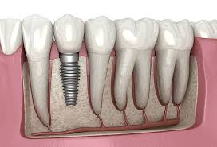
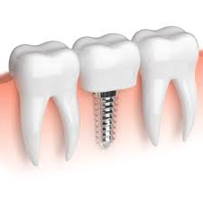
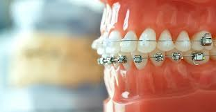
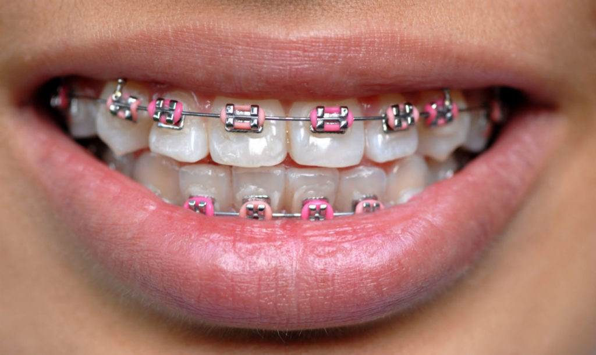

Root Canals:
A root canal intal procedure used to treat an infected or damaged tooth. It involves removing the tooth's pulp, cleaning and disinfecting the inside, and sealing it to prevent further infection. This saves the tooth from extraction and alleviates pain. A crown is often placed afterward to restore its strength and function.
 
Dental Implants:
Dental implants are artificial tooth roots, typically made of titanium, used to support replacement teeth. Surgically placed into the jawbone, they fuse with the bone over time, providing a stable foundation for crowns, bridges, or dentures. Implants restore the look, feel, and function of natural teeth, improving chewing, speaking, and overall oral health while preventing bone loss.
 
Tooth alignment:
Tooth alignment refers to the proper positioning of teeth within the dental arch. Misalignment can lead to issues like bite problems, jaw pain, and uneven wear. Orthodontic treatments, such as braces or clear aligners, are commonly used to correct alignment by gradually moving teeth into their ideal positions. Proper alignment enhances aesthetics, improves oral function, and contributes to overall dental health.
 